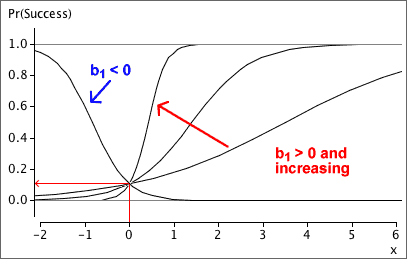
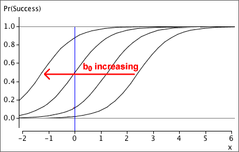

| predicted proportion, |  |
|---|
A curve that lies between 0 and 1 for all values of x
Various nonlinear equations have values between 0 and 1 for all values of x, but the simplest of these is a logistic curve,
| predicted proportion, | |
|---|
The parameters of the logistic curve
The parameter b1 is called the slope of the curve. Increasing it makes the curve steeper, and its sign determines whether the curve slopes upwards or downwards.

The parameter b0 is the curve's intercept and it determines the horizontal position of the curve. Increasing it shifts the curve to the left.
